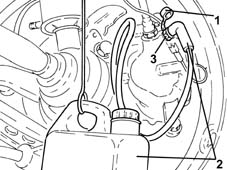
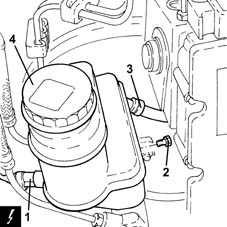

3330C30 brake fluid reservoir - r + r and wash inside
- Path
- Procedures > 33 BRAKING SYSTEM > 3330 HYDRAULIC BRAKING SYSTEM > 3330C brake pump, reservoir and load proportioning valve > 3330C30 brake fluid reservoir - r + r and wash inside
- Kind
- repair procedure (removal / refitting; the operation number is the code)
- Applies to
- all engines; all production periods
- Interactive page
- https://sloeber94.github.io/elrnDB-lYpsln/en/#/2429173
Applies to: all engines; all production periods
 Removing
Removing
 Refitting
RefittingPosition the vehicle on the ramp.
Proceed with removal 5530B10 battery - r+r .
Proceed with removal 5530B52 Battery DRIP TRAY/SUPPORT - R.R. .
1. Remove the protective cap on the brake caliper bleed valve.
2. Connect the collection system (pipe and reservoir) to the bleed valve on the brake caliper.
3. Loosen the bleed valve on the brake caliper
Wait for the brake-clutch reservoir to drain.

Applies to: all engines; all production periods
1. Disconnect the electrical connection from the brake fluid level sensor.
 | Name | Connector |
|---|---|---|
1 | Brake fluid level sensor (switch) |
2. Undo the bolt securing the brake fluid reservoir to the master cylinder.
3. Loosen the band and disconnect the delivery pipe from the reservoir to the master cylinder, reservoir side.
4. Remove the brake fluid reservoir press-fitted to the master cylinder.

Applies to: all engines; all production periods
Refitting
RemovingConnect the electrical connection to the brake fluid level sensor.
Connect the delivery pipe from thereservoir to the master cylinder, reservoir side and tighten the band.
Refit the brake fluid resevoir by press-fitting to the master cylinder and tighten the bolt.
Proceed with refitting 0010T64 brake and or clutch fluid check level and top up as necessary .
Proceed with refitting 0010T65 hydraulic brake system bleed air .
Proceed with refitting 5530B52 Battery DRIP TRAY/SUPPORT - R.R. .
Proceed with refitting 5530B10 battery - r+r .
Remove the car from the ramps.
Topics linked from this page (5)
- 0010T64 brake and or clutch fluid check level and top up as necessary
- 0010T65 hydraulic brake system bleed air
- 5530B10 battery - r+r
- 5530B52 Battery DRIP TRAY/SUPPORT - R.R.
- K25 Brake fluid level sensor (switch) ( FRONT )